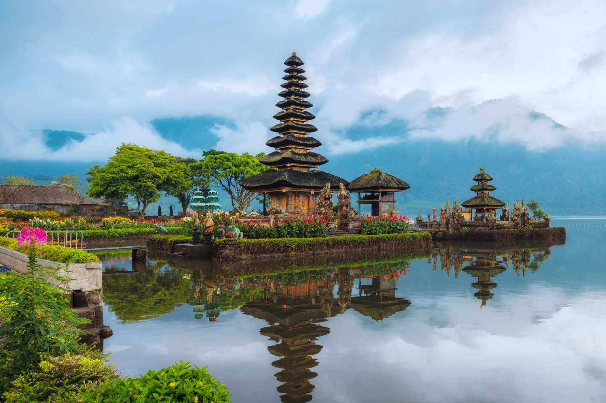

ЕГЗОТИЧНА ПОНУДА

ОСТРОВИ, ХРАМОВИ И ТРОПСКА ПРИРОДА
Бали, Индонезија
20.08 - 30.08
Откријте ја магијата на Бали, островот исполнет со тропска природа, прекрасни плажи и древни храмови. Уживајте во зелените оризови полиња, егзотичните пејзажи и уникатната балиска култура. Совршена понуда за сите кои сакаат егзотични дестинации, авантура и целосна релаксација.
ЕГЗОТИЧНА АВАНТУРА
Истражување на културниот центар на Бали, познат по храмовите, уметноста и зелените оризови полиња.
Посета на еден од најпознатите балиски храмови, сместен покрај самиот океан.
Уживање во сончевите плажи, топлото море и прекрасната тропска атмосфера.
Прошетка низ живописните оризови полиња и уживање во уникатната природа на островот.
Состанок со групата на аеродром во Скопје, 2 часа пред летот. Следува лет до Бали и пристигнување на аеродромот. По завршувањето на аеродромските процедури следува организиран трансфер до хотелот и сместување. По сместувањето следува време за одмор и освежување. Попладнето е предвидено за прва прошетка низ околината и запознавање со местото. Вечерта е слободна за вечера и индивидуални активности. Ноќевање во хотел.
Појадок во хотелот и организирано разгледување на Убуд. Посета на Убуд Палас и прошетка низ традиционалните улици и локалните пазари. Следува слободно време за кафе, ручек, шопинг и фотографирање. Попладнето е предвидено за индивидуално истражување на културниот центар на Бали. Вечерта е слободна за одмор и индивидуални активности. Ноќевање во хотел.
Појадок и организирано тргнување кон храмот Танах Лот. Следува разгледување на познатиот храм сместен на карпа покрај океанот. Патниците ќе имаат време за фотографирање и уживање во крајбрежниот пејзаж. Попладнето продолжува со слободно време во околината и пауза за кафе или ручек. Вечерта е слободна за одмор. Ноќевање во хотел.
Појадок во хотелот и организирано заминување кон една од познатите балиски плажи. Следува слободно време за капење, сончање и релаксација покрај океанот. Во текот на денот е предвидено време за ручек, кафе и индивидуални активности. Попладнето продолжува со уживање на плажата и фотографирање. Во договореното време следува враќање во хотелот. Ноќевање во хотел.
Појадок и организирана посета на живописните оризови полиња околу Убуд. Следува прошетка низ зелените тераси и запознавање со традиционалниот начин на одгледување ориз. Предвидено е време за фотографирање и уживање во природата. Потоа следува слободно време за ручек и одмор во околината. Попладнето е предвидено за враќање и слободни активности. Ноќевање во хотел.
Појадок во хотелот и организирано тргнување кон водопадот Тегенунган. Следува прошетка низ тропската природа и посета на водопадот, со можност за фотографирање и одмор. По разгледувањето е предвидено слободно време за кафе и ручек. Попладнето следува враќање кон хотелот и слободно време за индивидуални активности. Вечерта е слободна за одмор. Ноќевање во хотел.
Појадок и организирана посета на храмот Сарасвати во Убуд. Следува прошетка низ околината и запознавање со балиската архитектура и традиција. Потоа е предвидено слободно време за ручек, кафе и индивидуално разгледување. Попладнето патниците можат да уживаат во локалните продавници и уметнички галерии. Вечерта е слободна за одмор и индивидуални активности. Ноќевање во хотел.
Појадок во хотелот и ден посветен на одмор покрај океанот. Следува слободно време за капење, сончање, прошетка и релаксација на плажа. Во текот на денот патниците ќе имаат можност за ручек, кафе и индивидуални активности. Попладнето продолжува со уживање во тропската атмосфера. Вечерта е слободна за прошетка, вечера и одмор. Ноќевање во хотел.
Појадок во хотелот и слободно време за последно истражување на Убуд. Патниците можат да прошетаат низ локалните пазари, да посетат продавници и уметнички галерии или да купат сувенири. Предвидено е време за ручек и кафе, како и индивидуално разгледување на местото. Попладнето следува враќање во хотелот и подготовка за патувањето. Вечерта е слободна за одмор. Ноќевање во хотел.
Појадок во хотелот и одјавување согласно предвиденото време. По собирањето на багажот следува организиран трансфер до аеродромот. По пристигнувањето следува пријавување за летот и завршување на потребните аеродромски процедури. По летот следува враќање и завршување на патувањето.